Pentagonal numbers¶
Problem 44
Pentagonal numbers are generated by the formula, 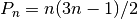. The first ten pentagonal numbers are:
1, 5, 12, 22, 35, 51, 70, 92, 117, 145, ...
It can be seen that 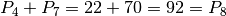. However, their difference, 70 - 22 = 48, is not pentagonal.
Find the pair of pentagonal numbers, 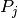 and 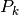, for which their sum and difference is pentagonal and 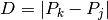 is minimised; what is the value of D?
Solution
A handy functional for computing the nth pentagonal number, euler45.P().
from euler45 import P
The difference between 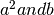.
If zero, 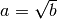.
Otherwise, 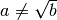.
Used with findRoot() to extract square roots.
def isqrt( a, b ):
"""a == sqrt(b); a**2 == b
>>> from euler44 import isqrt, findRoot
>>> all( 2 == findRoot( isqrt, i, 1, i ) for i in range(4,9) )
True
>>> all( 3 == findRoot( isqrt, i, 1, i ) for i in range(9,16) )
True
>>> findRoot( isqrt, 16, 1, 16 )
4
"""
return a*a - b
The difference between the ath Pentagonal number and b.
If zero, 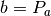
Otherwise, 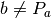
Used with findRoot() to Pentagonal numbers.
def pent( a, b ):
"""a == Pentagonal(b)
>>> from euler44 import pent, findRoot
>>> findRoot(pent, 1, 0, 2 )
1
>>> findRoot(pent, 5, 0, 5 )
2
>>> findRoot(pent, 12, 0, 12 )
3
>>> findRoot(pent, 22, 0, 22 )
4
>>> findRoot(pent, 35, 0, 35 )
5
>>> findRoot(pent, 51, 0, 51 )
6
>>> findRoot(pent, 70, 0, 70 )
7
>>> findRoot(pent, 92, 0, 92 )
8
>>> findRoot(pent, 117, 0, 117 )
9
>>> findRoot(pent, 145, 0, 145 )
10
"""
return P(a) - b
Locate 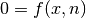 for a given function and argument value n.
Limit the search for x to lo ≤ x ≤ hi.
We can use this with isqrt() to compute square roots.
We can use this with pent() to find a pentagonal nuber.
def findRoot( f, n, lo, hi ):
a, b = lo, hi
while a+1 < b:
mid= (a+b)//2
c= f(mid,n)
#print "%s(%d,%d) == %d" % ( f.__name__, mid, n, c )
if c == 0:
return mid
elif c < 0:
a= mid
elif c > 0:
b= mid
else:
raise Error( "You're kidding, right?")
return a
Accumulate a set of Pentagonal numbers. This function uses a memoized dictionary to accumulate a mapping of number to pentagonal.
memoized= dict()
def isPent( n ):
"""
from euler44 import isPent
"""
if n not in memoized:
memoized[n]= P( findRoot(pent,n,0,n) ) == n
return memoized[n]
Test the module components.
def test():
"""
Test the imported ::py:func:`euler45.P` function.
>>> from euler45 import P
>>> [ P(i+1) for i in range(10) ]
[1, 5, 12, 22, 35, 51, 70, 92, 117, 145]
"""
import doctest
doctest.testmod(verbose=0)
Create the answer.
def answer():
"""
D must be minimal P(k)-P(j). So, if we generate P(d) in sequence,
we can explore the space of P(k)-P(j) == D. For D == 22, for example,
we want all P(k)-P(j) == 22.
"""
for k in range(2,3000):
for j in range(k-1,0,-1):
pj, pk = P(j), P(k)
#print( j, k, pj, pk )
if isPent(pk-pj):
#print( j, k, pj, pk, pk+pj, isPent(pk+pj), pk-pj )
if isPent(pk+pj) and isPent(pk-pj):
return pk-pj
Confirm the answer.
def confirm(ans):
assert ans == 5482660, "{0!r} Incorrect".format(ans)
Create some output.
if __name__ == "__main__":
test()
ans= answer()
confirm( ans )
print( "The minimum difference between pentagonal numbers where the sum and difference are pentagonal:", ans )